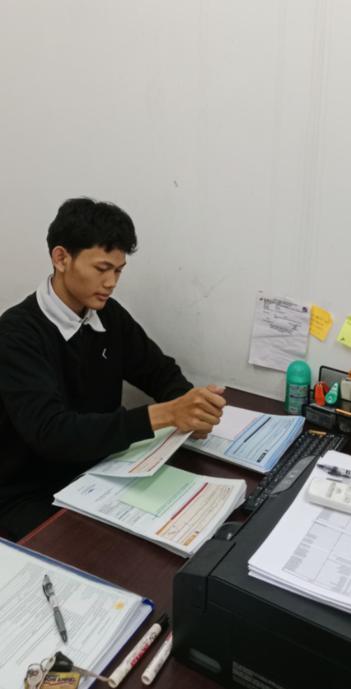

Pada tahap ini, saya mulai diberikan tanggung jawab untuk menangani alur fisik berkas SP2D (Surat Perintah Pencairan Dana) yang masuk dari OPD ke BPKAD.
Tugas krusial saya adalah melakukan Tax Guardian, yaitu memverifikasi lampiran pajak SSP secara ketat untuk memastikan nominalnya sesuai dan kode billing-nya masih aktif guna menghindari terjadinya retur dari pihak Bank.